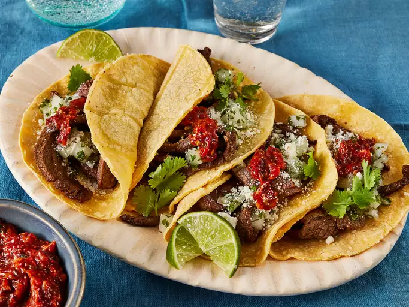

Taqueria-Style Tacos - Carne Asada

Description
Carne asada tacos made with tender strips of flank steak, served on soft corn tortillas
Ingredients
-
3 pounds flank steak
-
Marinade
-
Onion Relish
-
Salsa
-
1 (32 ounce) package of corn tortillas
-
2 limes, cut into wedges
Steps
-
Lay flank steak in a large glass baking dish.
-
Pour marinade over steak. Cover the dish with plastic wrap and marinate in the refrigerator for 1 to 8 hours.
-
Remove steak from the marinade and shake off excess. Discard the remaining marinade. Cut the marinated flank steak into cubes or strips. Heat vegetable oil in a large skillet over medium-high heat. Add steak; cook and stir until cooked through and most of the liquid has evaporated.
-
Warm tortillas in a dry skillet over low heat for about a minute on each side.
-
Place some steak on each tortilla; top with relish and prepared salsa. Sprinkle with cotija cheese. Garnish with lime wedges and serve.